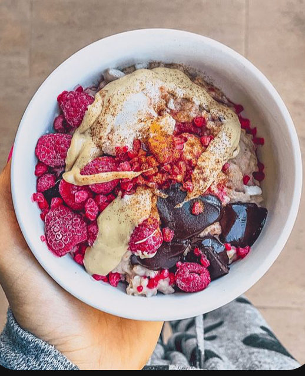

1. Den – Výživný start
- Snídaně: Ovesná kaše s banánem, arašídovým máslem a ořechy
- Svačina: Jogurt s müsli a medem
- Oběd: Kuřecí rizoto s hráškem a sýrem
- Svačina: Proteinový koktejl + banán
- Večeře: Celozrnný toast s vajíčkem, šunkou a avokádem